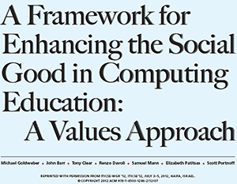

Topic Overview
We are exploring how AI-driven hiring tools are reshaping recruitment in New Zealand, looking at both the opportunities they create and the risks they introduce for job seekers, employers, and society.
Definition
AI recruitment tools are software systems that utilise machine learning to automate parts of the hiring process in organisations. This can include inspecting CVs, ranking candidates, organising and supervising chat or video interviews, and predicting who would best suit a job role. This usually occurs before a human recruiter even sees an application.
Topic Focus
Our focus is on how these tools work technically and who they affect in New Zealand. We looked at real NZ case studies like Woolworths (Countdown) and Spark NZ, alongside global examples like Amazon Web Services (AWS). This helped us ground our research in concrete documented outcomes rather than just theoretical ideas.
Why Is This Topic Important?
AI-driven hiring now plays a major role in how New Zealand employers select candidates, directly shaping access to employment and fairness in the labour market. As human judgement is replaced with automated systems, the risks of bias, discrimination, and lack of transparency increase. These systems can also reduce job opportunities for human recruiters.
This is especially significant in New Zealand, where young workers, migrants, and students make up a large portion of the entry-level workforce. AI tools influence who gets shortlisted, rejected, or labelled as "suitable" — often without candidates knowing how or why. These risks exist because AI models learn from historical hiring data, which may carry past patterns of racism, sexism, or other discrimination, meaning biased data can produce biased decisions (Soleimani et al., 2021).
New Zealand currently has no dedicated AI legislation. These tools operate under the Privacy Act 2020 and the Human Rights Act 1993, which were not designed with automated decision-making in mind (Simpson Grierson, 2024). Candidates can be rejected without ever knowing why or being able to challenge the decision.
Why Is This Relevant to Us?
This topic is highly relevant to us as university students and early-career job seekers because AI-based hiring is rapidly becoming the new normal in New Zealand. It already shapes the casual and entry-level jobs we apply for now, and it will play an even bigger role when we start applying for long-term professional roles. Companies ranging from Woolworths and Kmart to large corporations like Microsoft and Amazon use automated screening instead of human recruiters. This means our generation will increasingly be evaluated by algorithms rather than people.
According to the Scitex Workforce Report (2025), 49% of NZ-based job seekers are already using AI tools like ChatGPT to help with their job applications. AI-related role changes in NZ organisations also more than doubled between 2023 and 2025, rising from 7% to 18% (Beyond Recruitment, 2025).
Method of Research
Our research is based on case studies of organisations actively using AI in their recruitment processes, examining how these systems function and the outcomes they produce. We analysed documented real-world examples from New Zealand and internationally, and reviewed the hiring processes of specific companies. Academic literature focused on algorithmic bias was used to contextualise our findings, along with industry reports and legal commentary from New Zealand professionals.
Figure
